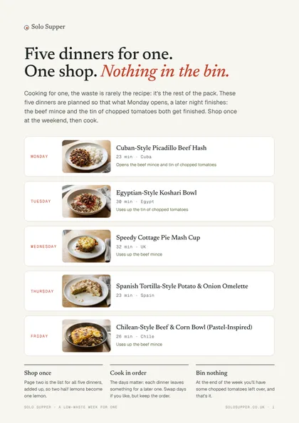

Persian-Style Chicken with Saffron Rice
Day 1
Supermarkets sell for families. Cook for one and half the coriander, the rest of the mince and most of a bag of spinach end up in the bin. Solo Supper is 451 free recipes written for one, and a planner that makes sure the packs you open get finished.
Free: every recipe, the planner and the shopping list. Pro, £2.49 a month: low-waste planning.


451 dinners from 65 countries, each written for a single portion. Someone staying over? Every recipe scales up with a tap.
Browse the recipesHalf a tin of chickpeas, the rest of the coriander: pick what needs using up and get dinners that finish it.
Use it upPut dinners into your week and get one list for the shop, added up, so two half lemons become one lemon.
Open the plannerPro picks the week for you, choosing dinners that share their packs and finish what’s already in your fridge. The average person in the UK bins about £250 of food a year; Pro is £14.99 a year.
How Pro worksMake a free account and your planner, shopping list and favourites follow you from phone to laptop. New accounts get 14 days of Pro free, no card needed.
Five dinners for one that share their shopping, with the list for all five. Yours free when you join the Saturday email.

Three dinners that use up your chicken thighs between them. Every pack you open gets finished.
Day 1
Day 2
Day 3
Three dinners that use up your beef mince between them. Every pack you open gets finished.
Day 1
Day 2
Day 3
Three dinners that use up your pork sausages between them. Every pack you open gets finished.
Day 1
Day 2
Day 3
Three dinners that use up your coriander between them. All that's left over is a little pitta bread and lemon.
Day 1
Day 2
Day 3
Three dinners that use up your chopped tomatoes between them. All that's left over is a little lemon.
Day 1
Day 2
Day 3
Three dinners that use up your chestnut mushrooms between them. Every pack you open gets finished.
Day 1
Day 2
Day 3
Three dinners that use up your baby spinach between them. All that's left over is a little paneer and lemon.
Day 1
Day 2
Day 3
Three dinners that use up your tenderstem broccoli between them. All that's left over is a little chicken thigh.
Day 1
Day 2
Day 3
One tap chooses dinners that share their packs: the other half of the coriander, the rest of the mince. Swap anything you would not cook.
One list, grouped by aisle, with quantities added up. Hide what is already in the cupboard.
Every recipe is a single portion, with a step-by-step cooking mode and timers. Friend round? Set that day to two and the recipe and the list scale up.
3 packs shared across the week.
I live on my own, and I’m an idle cook. Without a plan, a trip to the supermarket meant ready meals and snacks. With one, it meant packs sized for two and half of everything in the bin by Friday. Solo Supper is what fixed that for me: simple dinners for one, and a planner that makes sure what I open gets eaten. I hope it does the same for you.
Neil
Read the whole storyThe recipes, the planner and the shopping list are yours to use. Pro does the clever part: it plans around the packs you open and what is already in the fridge.
No card needed for the trial. Then £14.99 a year or £2.49 a month, prices include VAT. Cancel any time.
Dinners picked to share their packs, so the other half of the spinach gets eaten.
Tell it what is in the fridge and it plans dinners that finish it off.
Sort out next week on a Sunday, with this week’s leftovers carried over.
See the packs you finish instead of binning, and roughly what that saves.
Tick a dinner as cooked and it joins your collection: 451 dishes from 65 countries. Cook 25 different dinners and choose one of the cookbooks, free.
Start your collectionEvery recipe planned into weeks that share their shopping, with a photo of every dish. PDF or paperback.
See inside the books